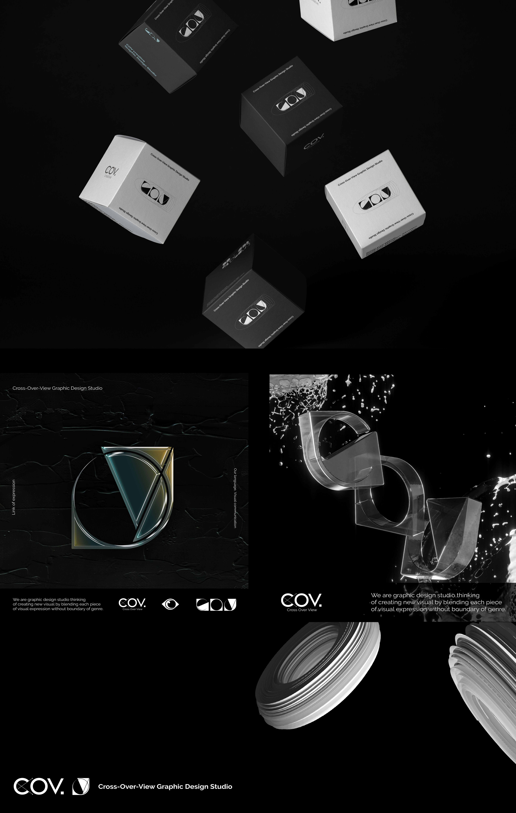
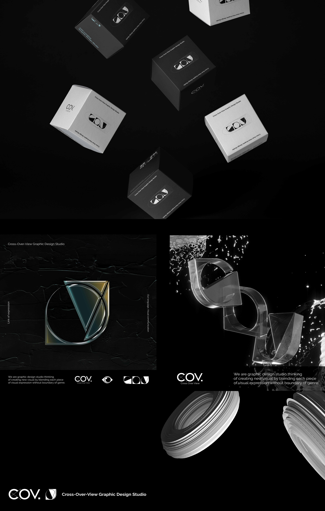

COV Creative Studio
김희수
https://www.instagram.com/heeeesoo_/
https://www.behance.net/heeeesoo_
코브 크리에이티브 스튜디오
시각적 표현 안의 각각의 조각들이 장르의 경계 없이 섞여 새로운 비주얼을 창조한다는 철학을 담고 있는 그래픽디자인 스튜디오입니다.
-표현의 고리
코브는 결합을 지향합니다. 두 가지 이상의 경계를 허물고 확장해 나아간다는 비전을 담고 있습니다.
-우리의 언어, 비주얼커뮤니케이션
시각적 표현으로 자신들의 언어를 써 내려가는 우리는 끊임없는 표현을 통해 특별한 언어를 새롭게 창조하고 그 언어로 사람들을 만나며 소통합니다.
-미학의 교차점
모든 시각예술은 눈앞에 놓인 아름다움을 사랑하며 동시에 보이지 않은 아름다움을 그립니다. 그렇기 때문에 그들이 모이면 ‘아름다움’의 교차점이 생기며 이는 또 다른 크리에이티브를 만들어 냅니다.
COV Creative studio
We are graphic design studio thinking of creating new visual by blending each piece of visual expression without boundary of genre.
-Link of expression
COV looks for combination. Our vision is to make a step forward with expansion by breaking more than two boundaries.
-Our language, Visual communication
We, who write down our language with visual expression, create special language through continuous expression and communicate with that language.
-Crosspoint of aesthetics
Every visual art loves the beauty in front of our eyes but also draw the non-visible beauty at the same time. Therefore they make the crosspoint of “beauty” and this makes another creation